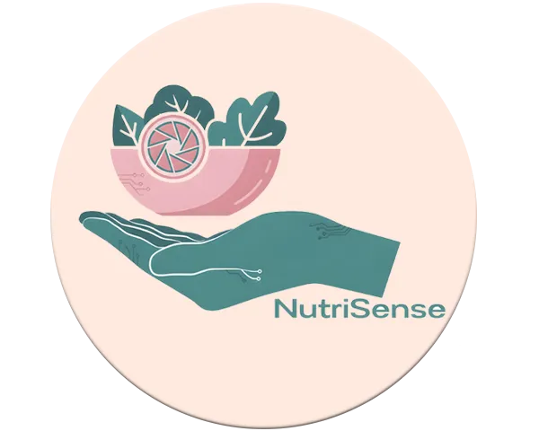

We are NutriSense!
Eating well shouldn't be a challenge in a dynamic world. At NutriSense, we transform dietary management by combining nutritional tracking with smart contextual analysis. We don't just count calories; we understand your environment so you can reach your fitness goals, no matter where you are or what the weather is today.

Mission and Vision
Mission
To empower people to eat better through visual food analysis and smart recommendations adapted to their environment and habits.
Vision
To be the leading personalized nutrition platform in Latin America, transforming user health regardless of their location.
Frequently Asked Questions
NutriSense is the only platform that combines visual food analysis (Smart Scan), real-time weather recommendations, travel mode with local dish suggestions, and pantry-based recipe ideas — all tailored to your individual health profile and dietary restrictions.
Simply take a photo of your plate or a restaurant menu. NutriSense uses computer vision to identify the food items and cross-references our nutritional database to estimate calories and macros. You review and confirm the result before it's saved to your log.
Yes! Travel Mode detects or lets you enter your current city/country and suggests healthy local dishes compatible with your profile. The weather engine updates meal recommendations daily based on real-time conditions in your location.
Absolutely. During profile setup you can specify allergies, intolerances, and medical conditions (diabetes, hypertension, celiac disease, etc.). These filters are applied permanently to every recommendation and search result throughout the app.
Premium subscribers can connect Google Fit to automatically import daily steps and active calories burned. These calories are factored into your daily balance in real time. Users without a wearable can also log activity manually.